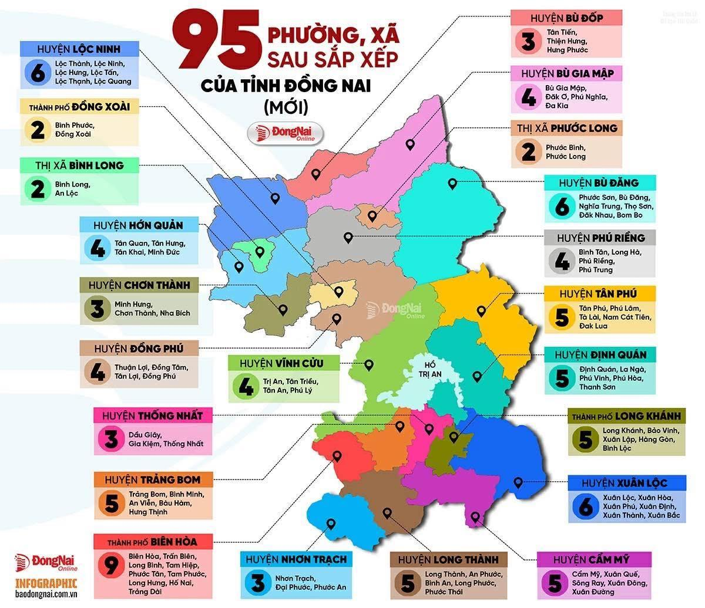
(Hình ảnh 1: 95 phường xã của Đồng Nai mới)
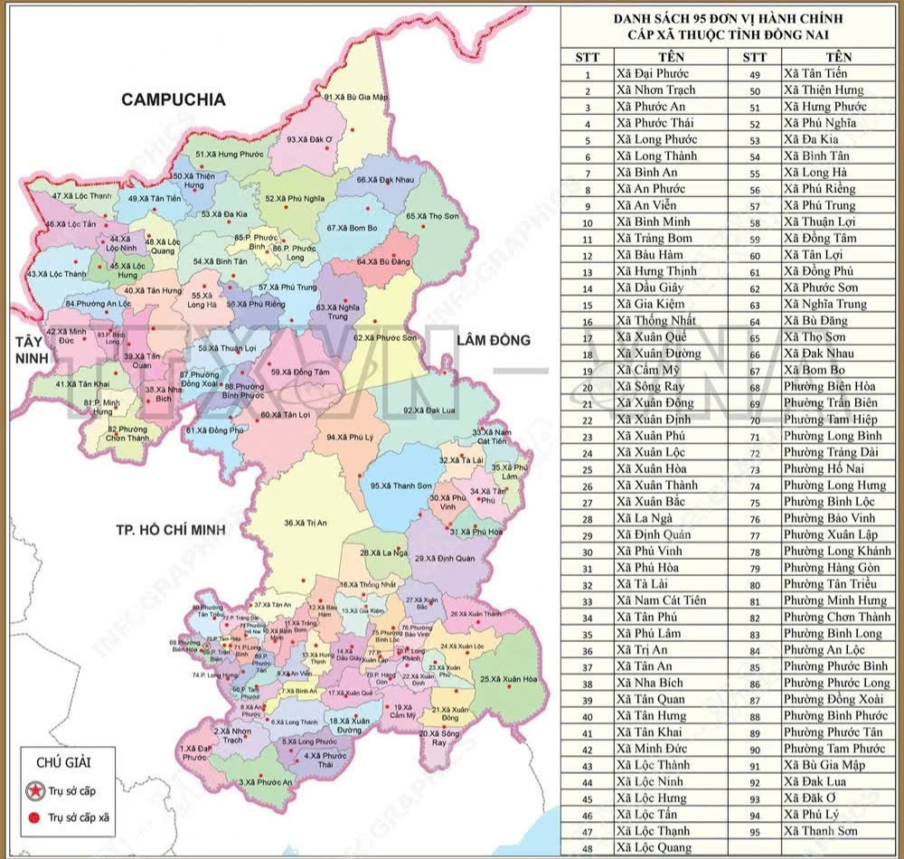
(Hình ảnh minh họa: Bản đồ tổng quan vị trí địa lý thành phố Đồng Nai)
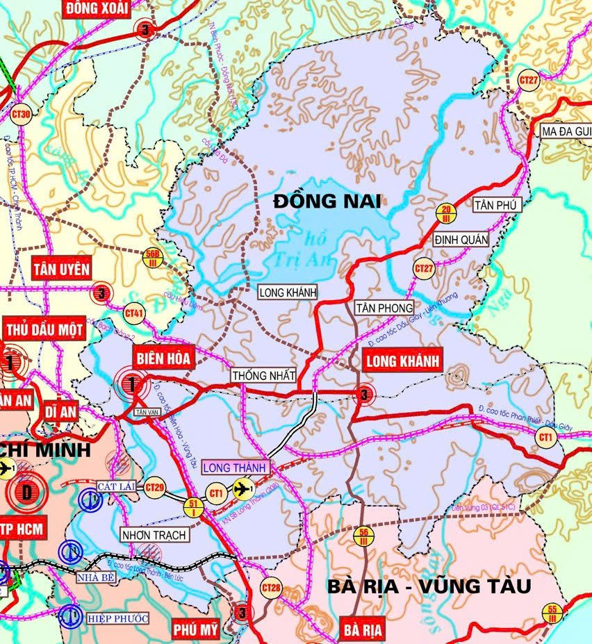
(Hình ảnh 2: Bản đồ kết nối giao thông vùng Đông Nam Bộ)
- Thành phố Đồng Nai nằm ở khu vực trung tâm vùng Đông Nam Bộ, có vị trí chiến lược trong liên kết giữa Thành phố Hồ Chí Minh, Tây Nguyên, Nam Trung Bộ và khu vực biên giới Campuchia.
- Thành phố Đồng Nai được thành lập trên cơ sở toàn bộ diện tích tự nhiên và quy mô dân số của tỉnh Đồng Nai sau khi tỉnh Đồng Nai và tỉnh Bình Phước được sắp xếp thành tỉnh mới có tên gọi là Đồng Nai vào năm 2025.
- Theo Sở Khoa học và Công nghệ thành phố Đồng Nai, diện tích tự nhiên của thành phố là 12.737,18 km², quy mô dân số là 4.491.408 người.
- Ranh giới địa lý:
- Thành phố Đồng Nai có vị trí thuận lợi để kết nối với các trung tâm kinh tế lớn của vùng Đông Nam Bộ và các khu vực Tây Nguyên, Nam Trung Bộ.
(Hình ảnh minh họa: Cảng hàng không quốc tế Long Thành - Huyết mạch giao thông)
- Đồng Nai là một trong những địa bàn có vị trí quan trọng trong mạng lưới giao thông và logistics của khu vực phía Nam.
- Thành phố nằm trên các hành lang giao thông quan trọng kết nối Thành phố Hồ Chí Minh với Tây Nguyên, Nam Trung Bộ và khu vực biên giới Campuchia.
- Trên địa bàn có nhiều tuyến giao thông huyết mạch như Quốc lộ 1, Quốc lộ 20, Quốc lộ 51, cùng các tuyến đường cao tốc và các công trình giao thông liên vùng.
- Đồng Nai có vị trí đặc biệt quan trọng đối với hệ thống giao thông hàng không của khu vực nhờ Cảng hàng không quốc tế Long Thành, một dự án hạ tầng hàng không có quy mô lớn và có vai trò tăng cường kết nối quốc tế của vùng Đông Nam Bộ.
- Với vị trí nằm giữa các trung tâm kinh tế lớn, Đồng Nai có điều kiện phát triển mạnh các ngành công nghiệp, logistics, thương mại, dịch vụ, đô thị và nông nghiệp công nghệ cao.
- Thành phố Đồng Nai được định hướng trở thành một cực tăng trưởng quan trọng của quốc gia, một trung tâm kết nối kinh tế vùng và cửa ngõ hội nhập quốc tế.
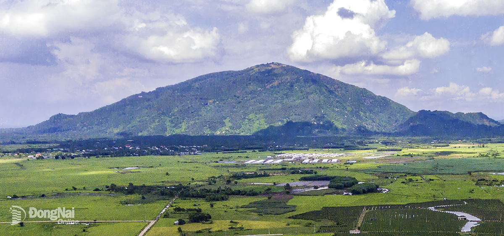
(Hình ảnh minh họa: Núi Chứa Chan)
- Do địa bàn hiện nay bao gồm cả Đồng Nai và Bình Phước trước đây, địa hình của thành phố Đồng Nai có sự phân hóa khá rõ rệt.
- Địa hình nhìn chung chuyển tiếp từ khu vực đồi núi thấp và cao nguyên ở phía Bắc, Đông Bắc xuống các vùng đồi thấp, đồng bằng và vùng thấp phía Nam.
- Khu vực phía Bắc và Đông Bắc có địa hình cao hơn, nhiều đồi và vùng đất bazan, trong khi khu vực phía Nam có địa hình thấp và tương đối bằng phẳng hơn.
- Sự đa dạng về địa hình tạo điều kiện phát triển nhiều loại hình sản xuất nông nghiệp, lâm nghiệp, công nghiệp và đô thị.
- Về thổ nhưỡng, Đồng Nai có nhiều nhóm đất khác nhau, trong đó đáng chú ý là đất đỏ bazan, đất xám và đất phù sa (đây là đặc điểm chung về phân bố thổ nhưỡng địa hình khu vực).
- Đất đỏ bazan có ý nghĩa lớn đối với sản xuất nông nghiệp, đặc biệt là các loại cây công nghiệp và cây ăn quả lâu năm.
- Đất phù sa phân bố chủ yếu ở các khu vực ven sông, thích hợp cho sản xuất nông nghiệp.
- Đất xám phân bố ở nhiều khu vực thuộc Đồng Nai và Bình Phước cũ, có thể được sử dụng cho nông nghiệp và các mục đích phát triển kinh tế khác khi có biện pháp cải tạo phù hợp.
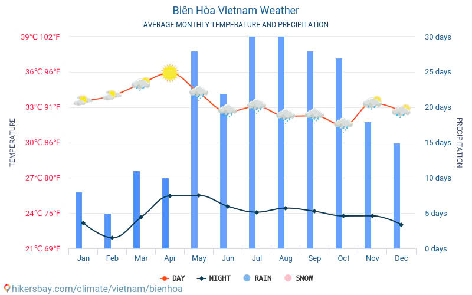
(Hình ảnh minh họa: Điều kiện khí hậu nhiệt đới tại Biên Hòa)
- Thành phố Đồng Nai nằm trong vùng khí hậu nhiệt đới gió mùa, có nền nhiệt tương đối cao và khá ổn định quanh năm.
- Khí hậu có sự phân hóa rõ thành mùa mưa và mùa khô.
- Mùa mưa nhìn chung kéo dài khoảng từ tháng 5 đến tháng 10, còn mùa khô thường kéo dài từ khoảng tháng 11 đến tháng 4 năm sau.
- Nhiệt độ trung bình năm phổ biến khoảng 25–27°C là đặc điểm chung phổ biến, tuy nhiên địa bàn sau sáp nhập rộng lớn hơn nên điều kiện khí hậu và nhiệt độ thực tế sẽ có sự khác biệt giữa các khu vực địa hình.
- Lượng mưa khá lớn và có sự phân hóa theo không gian. Một số khu vực phía Bắc có lượng mưa cao hơn, trong khi khu vực phía Nam có lượng mưa thấp hơn.
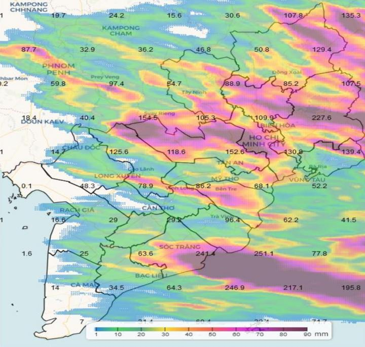
(Hình ảnh minh họa: Biểu đồ/Phân bố lượng mưa theo khu vực tại Đồng Nai)
- Điều kiện khí hậu nhìn chung thuận lợi cho sản xuất nông nghiệp quanh năm, đồng thời tạo điều kiện phát triển các loại cây công nghiệp, cây ăn quả và các hoạt động sản xuất khác.
- Sự phân hóa mùa mưa – mùa khô cũng là yếu tố cần được tính đến trong sản xuất nông nghiệp, quản lý nguồn nước và phòng chống thiên tai.
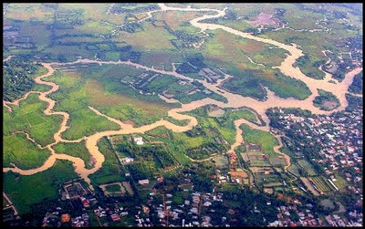
(Hình ảnh minh họa: Hệ thống Sông Đồng Nai)
- Hệ thống sông ngòi của Đồng Nai có vai trò quan trọng đối với cung cấp nước, sản xuất nông nghiệp, công nghiệp, sinh hoạt và phát triển kinh tế.
- Sông Đồng Nai là một trong những hệ thống sông lớn và quan trọng nhất ở khu vực Nam Bộ, có vai trò đặc biệt đối với nguồn nước của Đồng Nai và Thành phố Hồ Chí Minh.
- Ngoài sông Đồng Nai, địa bàn còn có các hệ thống sông, suối và hồ chứa quan trọng như sông La Ngà và hồ Trị An.
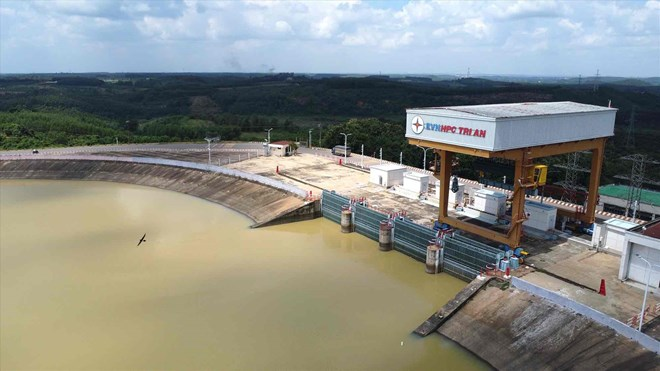
(Hình ảnh minh họa: Công trình Hồ thủy điện Trị An)
- Hồ Trị An được hình thành gắn với công trình thủy điện Trị An trên sông Đồng Nai. Hồ có vai trò quan trọng trong phát điện, điều tiết nguồn nước và cung cấp nước phục vụ phát triển kinh tế - xã hội.
- Hệ thống sông ngòi và hồ chứa của thành phố tạo ra tiềm năng lớn cho thủy điện, cấp nước, nông nghiệp, thủy sản và du lịch sinh thái.
- Bên cạnh đó, hệ thống sông ngòi cũng đặt ra yêu cầu về bảo vệ nguồn nước, kiểm soát ô nhiễm và sử dụng tài nguyên nước bền vững.
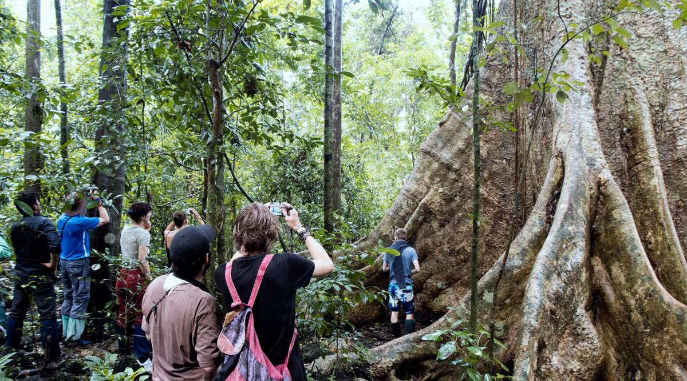
(Hình ảnh minh họa: Vườn quốc gia Cát Tiên – Đa dạng sinh học phong phú)
- Đồng Nai có nguồn tài nguyên rừng và đa dạng sinh học có giá trị cao.
- Vườn quốc gia Cát Tiên là một trong những khu vực có giá trị đặc biệt về bảo tồn thiên nhiên và đa dạng sinh học.
- Khu Bảo tồn thiên nhiên - văn hóa Đồng Nai cũng là khu vực có giá trị lớn về sinh thái, cảnh quan và bảo tồn đa dạng sinh học.
- Việc địa bàn tỉnh mở rộng về phía Bắc sau khi sáp nhập với Bình Phước làm cho không gian rừng và hệ sinh thái của Đồng Nai hiện nay đa dạng hơn so với trước đây.
- Tài nguyên rừng tại Đồng Nai có vai trò quan trọng trong bảo vệ môi trường, bảo tồn đa dạng sinh học, điều hòa nguồn nước, hạn chế xói mòn đất và phát triển du lịch sinh thái.
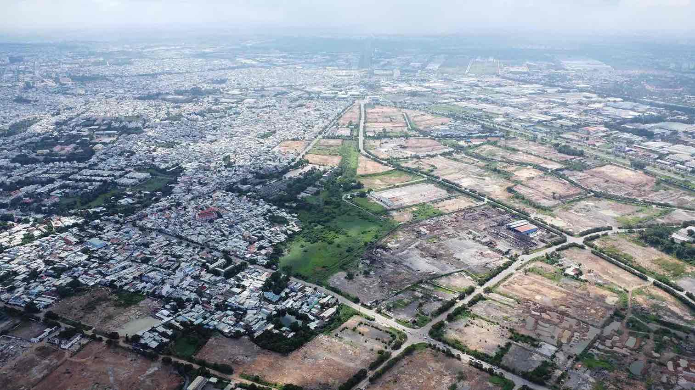
(Hình ảnh minh họa: Trung tâm đô thị hành chính thành phố Đồng Nai)
- Năm 2025, Quốc hội quyết định sắp xếp toàn bộ diện tích tự nhiên và quy mô dân số của tỉnh Bình Phước và tỉnh Đồng Nai để thành lập tỉnh mới có tên gọi là tỉnh Đồng Nai.
- Sau đợt sắp xếp năm 2025, tỉnh Đồng Nai có 95 đơn vị hành chính cấp xã, gồm 72 xã và 23 phường.
- Đến ngày 30/4/2026, 10 xã được chuyển thành phường, gồm: Trảng Bom, Long Thành, Trị An, Nhơn Trạch, Tân Khai, Xuân Lộc, Tân Phú, Lộc Ninh, Dầu Giây và Đồng Phú.
- Sau khi thành lập 10 phường mới, địa bàn có 95 đơn vị hành chính cấp xã, gồm 62 xã và 33 phường.
- Ngày 30/4/2026, Nghị quyết số 30/2026/QH16 của Quốc hội chính thức có hiệu lực, thành lập thành phố Đồng Nai trực thuộc Trung ương trên cơ sở toàn bộ diện tích tự nhiên và quy mô dân số của tỉnh Đồng Nai.
- Phường Trấn Biên giữ vai trò trung tâm chính trị, hành chính, kinh tế và văn hóa - xã hội của thành phố Đồng Nai.
- Thành phố Đồng Nai có diện tích tự nhiên 12.737,18 km², quy mô dân số chốt theo hồ sơ thống kê chính thức là 4.491.408 người.
- Mật độ dân số trung bình khoảng 352,6 người/km².
- Dân cư phân bố không đồng đều. Các khu vực đô thị, công nghiệp và các trung tâm kinh tế có mật độ dân số cao hơn nhiều so với các khu vực miền núi, nông thôn và vùng biên giới.
- Sau khi thành lập 10 phường mới vào năm 2026, tỷ lệ đô thị hóa của thành phố đạt khoảng 54,10%, tương ứng khoảng 2,43 triệu người sống trong khu vực đô thị theo phương án được sử dụng khi thành lập thành phố.
- Đồng Nai có lực lượng lao động lớn, tập trung nhiều trong các ngành công nghiệp chế biến, chế tạo, xây dựng, thương mại, dịch vụ, logistics và nông nghiệp.
- Đặc điểm dân số đông và lực lượng lao động lớn tạo điều kiện thuận lợi cho phát triển công nghiệp, dịch vụ và đô thị, đồng thời đặt ra yêu cầu về việc làm, nhà ở, giáo dục, y tế, giao thông và hạ tầng xã hội.
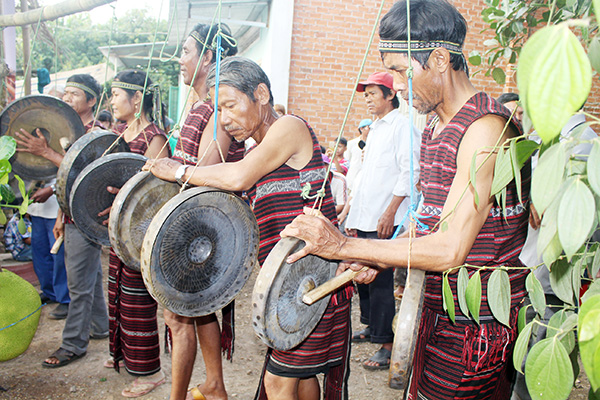
(Hình ảnh minh họa: Đồng bào Chơro Đồng Nai)
- Thành phố Đồng Nai là địa bàn có nhiều thành phần dân tộc cùng sinh sống.
- Theo báo cáo chính thức từ Sở Dân tộc và Tôn giáo thành phố Đồng Nai, địa bàn có 37 thành phần dân tộc thiểu số, với khoảng 421.090 người, chiếm gần 9,4% dân số.
- Các dân tộc thiểu số tiêu biểu có cộng đồng sinh sống tại Đồng Nai gồm Chơ Ro, Mạ, S'tiêng, Tày, Nùng, Hoa, Khmer...
- Về tôn giáo, Đồng Nai là địa bàn có đời sống tín ngưỡng, tôn giáo phong phú. Có nhiều tôn giáo cùng hoạt động như Công giáo, Phật giáo, Tin Lành, Cao Đài và các tôn giáo khác.
- Theo báo cáo thống kê của Sở Dân tộc và Tôn giáo thành phố Đồng Nai, toàn thành phố có 24 tổ chức thuộc 10 tôn giáo, với hơn 1.500 cơ sở tôn giáo và khoảng 2,67 triệu tín đồ.
- Sự đa dạng về dân tộc, tín ngưỡng và tôn giáo góp phần tạo nên bản sắc văn hóa phong phú của thành phố Đồng Nai.
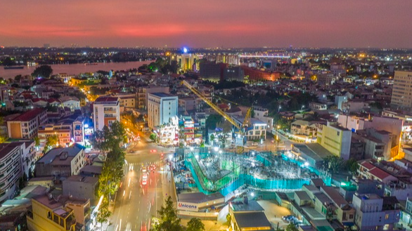
(Hình ảnh minh họa: Thành phố Đồng Nai phát triển hiện đại và hội nhập)
- Thành phố Đồng Nai hiện là thành phố trực thuộc Trung ương, được hình thành trên cơ sở toàn bộ địa giới của tỉnh Đồng Nai sau khi tỉnh Đồng Nai và tỉnh Bình Phước được sắp xếp thành tỉnh Đồng Nai mới năm 2025.
- Với diện tích 12.737,18 km², dân số 4.491.408 người và hệ thống 95 đơn vị hành chính cấp xã gồm 33 phường và 62 xã, Đồng Nai có không gian phát triển rộng lớn và dân số thuộc nhóm cao nhất cả nước.
- Thành phố có vị trí đặc biệt quan trọng trong liên kết vùng Đông Nam Bộ với Tây Nguyên, Nam Trung Bộ và Campuchia.
- Điều kiện tự nhiên đa dạng, tài nguyên đất, nước và rừng phong phú tạo nền tảng cho phát triển nông nghiệp, công nghiệp, năng lượng, dịch vụ và du lịch.
- Hệ thống giao thông liên vùng, các khu công nghiệp, logistics và Cảng hàng không quốc tế Long Thành tạo cho Đồng Nai lợi thế lớn trong phát triển kinh tế và hội nhập quốc tế.
- Bên cạnh những lợi thế, Đồng Nai cũng phải đối mặt với các vấn đề về đô thị hóa, giao thông, môi trường, quản lý tài nguyên nước, bảo vệ rừng và cân bằng giữa phát triển kinh tế với bảo tồn thiên nhiên.
- Với những lợi thế về vị trí địa lý, quy mô dân số, cơ sở hạ tầng và tiềm năng kinh tế, thành phố Đồng Nai có vai trò quan trọng trong chiến lược phát triển vùng Đông Nam Bộ và cả nước.